Estadistica Aplicada | 5to semestre de Economía industrual
Author
Cesar Acosta Mejia
Distribución Uniforme Discreta
Ejercicio 1.1
Se simulan 500 observaciones de \(X \sim \text{Uniforme}(\{0, 1, 2, 3, 4\})\) y se contrastan las frecuencias que salieron con las que predice la teoría.
En esta simulación cada número del 0 al 4 tiene la misma oportunidad de salir, por lo que se esperarían 100 apariciones de cada uno. Las frecuencias obtenidas van de 93 a 106: no son exactas por la naturaleza aleatoria del proceso, pero todas se mantienen cerca de 100 y las proporciones rondan el 0.2 teórico.
Ejercicio 1.2
Comprobación del Teorema Central del Límite (TCL) con \(k = 1000\) muestras de tamaño \(n = 50\) de \(X \sim \text{Uniforme}(\{1, 2, \dots, 10\})\).
set.seed(123)k <-1000n <-50dominio <-1:10# Parámetros teóricosmu_teorica <-mean(dominio) # 5.5var_teorica <-mean((dominio - mu_teorica)^2) # 8.25ee_teorica <-sqrt(var_teorica / n)# Medias muestralesmedias_unif <-vapply(seq_len(k),function(i) mean(sample(dominio, n, replace =TRUE)),numeric(1))# Histograma para revisar la formahist(medias_unif, probability =TRUE, main ="TCL - Uniforme Discreta",xlab ="Medias Muestrales", col ="#A7D3CC", border ="white")curve(dnorm(x, mean = mu_teorica, sd = ee_teorica), add =TRUE, col ="#0B3C49", lwd =2)
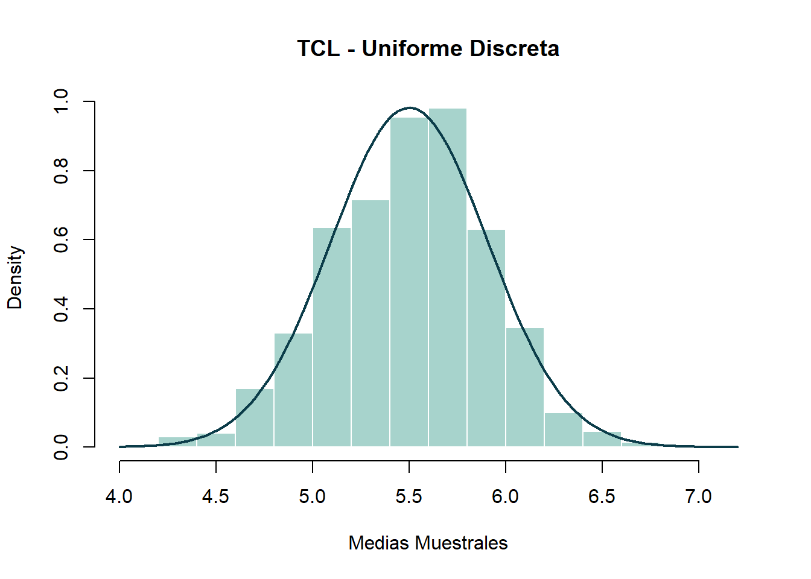
La variable de origen es plana: del 1 al 10 todos los valores pesan lo mismo y no hay nada parecido a una campana. Sin embargo, al calcular 1,000 promedios de muestras de 50, el histograma sí adopta la forma de campana y coincide con la curva normal. Eso es lo que afirma el TCL: sin importar cómo sea la variable original, sus promedios tienden a distribuirse normalmente. Además, los promedios se centran en 5.51, muy cerca del 5.5 esperado.
Distribuciones Bernoulli y Binomial
Ejercicio 2.1
\(X \sim \text{Binomial}(n=20, p=0.85)\), que representa la efectividad de un medicamento aplicado a 20 pacientes.
n <-20p <-0.85# a. Función de probabilidadexitos <-0:nbarplot(dbinom(exitos, size = n, prob = p), names.arg = exitos, col ="#5AA9A0",main ="Función de Probabilidad Binomial(20, 0.85)", xlab ="Éxitos", ylab ="Probabilidad")
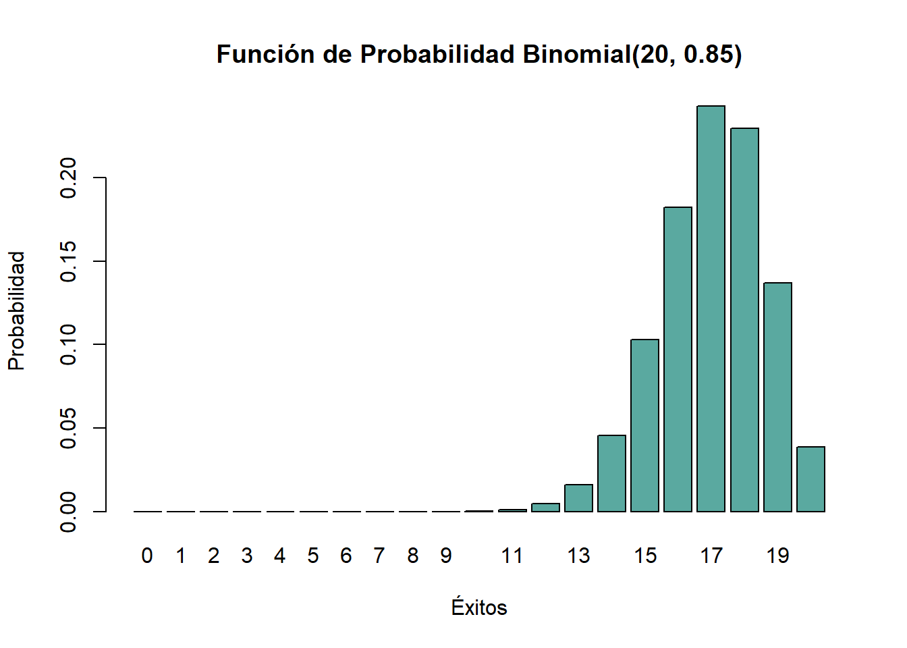
# b. Esperanza, varianza y desviación estándaresp_bin <- n * pvar_bin <- esp_bin * (1- p)sd_bin <-sqrt(var_bin)cat("Esperanza:", esp_bin, "\nVarianza:", var_bin, "\nDesv. Estándar:", sd_bin, "\n")
# c. Simulación de 1000 experimentosset.seed(123)sim_bin <-rbinom(1000, size = n, prob = p)cat("Media simulada:", mean(sim_bin), "\nVarianza simulada:", var(sim_bin), "\n")
Media simulada: 17.024
Varianza simulada: 2.501926
Con una efectividad del 85%, lo esperable en un grupo de 20 pacientes es que el medicamento funcione en 17 de ellos, con una desviación estándar de 1.6. La gráfica se inclina hacia la derecha porque el éxito es muy probable: los resultados más comunes son 16, 17 o 18 pacientes, y que funcione en menos de 13 resulta casi imposible. En los 1,000 experimentos simulados la media fue 17.02 y la varianza 2.5, valores muy cercanos a los teóricos (17 y 2.55).
Ejercicio 2.2
Se verifica que si \(X \sim \text{Bin}(n, p)\) y \(Y \sim \text{Bin}(m, p)\), entonces \(X + Y \sim \text{Bin}(n + m, p)\).
set.seed(123)n <-10; m <-15; p <-0.4N <-10000X <-rbinom(N, size = n, prob = p)Y <-rbinom(N, size = m, prob = p)Suma_XY <- X + YZ_directa <-rbinom(N, size = n + m, prob = p)# Contraste de medias y varianzasc(media_suma =mean(Suma_XY), media_directa =mean(Z_directa))
Se sumaron dos binomiales independientes con igual \(p\) (de 10 y 15 ensayos) y el resultado se comparó con una binomial de 25 ensayos generada directamente. Las medias (9.96 frente a 10) y las varianzas (5.84 frente a 6.03) son prácticamente iguales, y ambas se acercan a los valores teóricos de 10 y 6. La lógica es simple: hacer 10 ensayos y después 15 equivale a hacer 25 de golpe. Hay que recordar que esto solo aplica cuando ambas variables comparten la misma probabilidad de éxito.
Ejercicio 2.3
Aproximación normal a la binomial (\(n = 100, p = 0.3\)).
n <-100; p <-0.3mu <- n * psigma <-sqrt(mu * (1- p))# Condiciones: np >= 5 y n(1-p) >= 5cat("np =", n * p, ">= 5 | n(1-p) =", n * (1- p), ">= 5\n")
np = 30 >= 5 | n(1-p) = 70 >= 5
# Comparación gráficax <-0:nplot(x, dbinom(x, n, p), type ="h", col ="#0B3C49", lwd =2, main ="Binomial vs Aproximación Normal")curve(dnorm(x, mean = mu, sd = sigma), add =TRUE, col ="#E4572E", lwd =2)
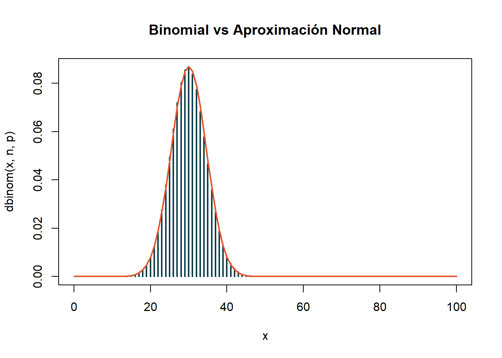
Lo primero fue confirmar las condiciones: \(np = 30\) y \(n(1-p) = 70\), ambas muy superiores a 5. En la gráfica, la curva normal roza la parte superior de las barras de la binomial, de modo que la aproximación resulta muy buena. Esto es útil porque obtener probabilidades con la normal es bastante más cómodo que sumar muchos términos binomiales.
Ejercicio 2.4
TCL para promedios de una Binomial(\(10, 0.7\)) con \(k=1000\) y \(n=30\).
set.seed(123)k <-1000; n_muestra <-30size_b <-10; prob_b <-0.7medias_binom <-sapply(1:k, function(i) mean(rbinom(n_muestra, size = size_b, prob = prob_b)))hist(medias_binom, probability =TRUE, col ="#8FC9BF", main ="TCL - Binomial")curve(dnorm(x, mean = size_b * prob_b, sd =sqrt(size_b * prob_b * (1- prob_b) / n_muestra)),add =TRUE, col ="#0B3C49", lwd =2)
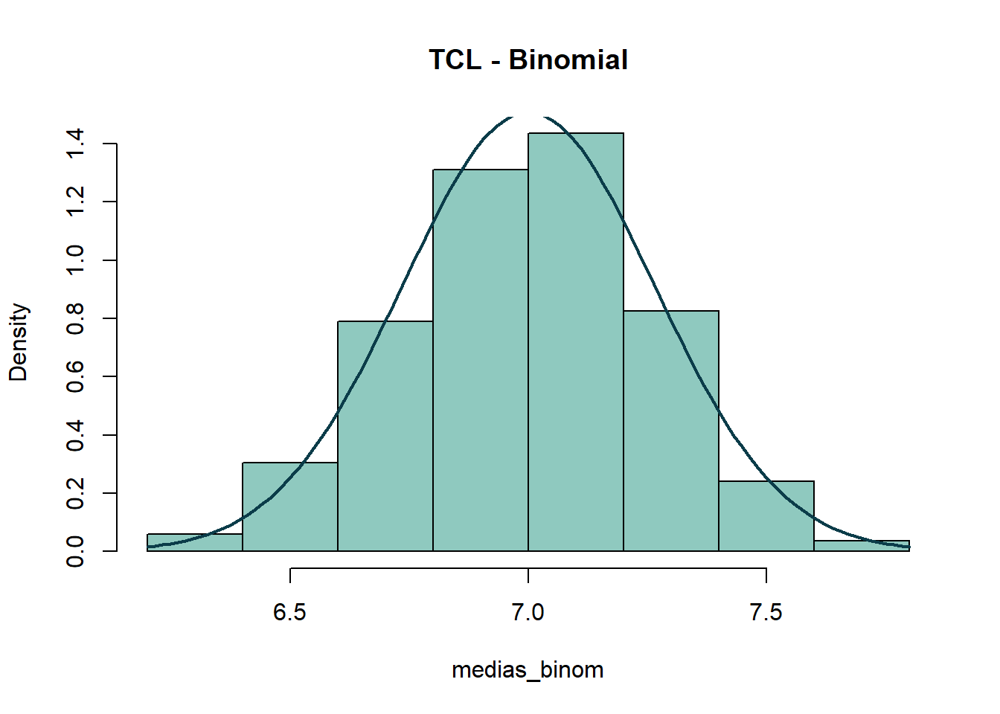
Los promedios de muestras de 30 provenientes de una Binomial(10, 0.7) forman una campana centrada en 7.01, esencialmente el 7 teórico (\(10 \times 0.7\)). El TCL vuelve a cumplirse, ahora con una variable discreta y algo inclinada hacia un lado.
Distribución Geométrica
Ejercicio 3.1
Pieza defectuosa con \(p = 0.02\).
p <-0.02# a. Gráficas de PMF y CDFx <-0:150# fracasos antes del primer éxitoplot(x, dgeom(x, prob = p), type ="h", col ="#5AA9A0", main ="PMF Geométrica(0.02)")
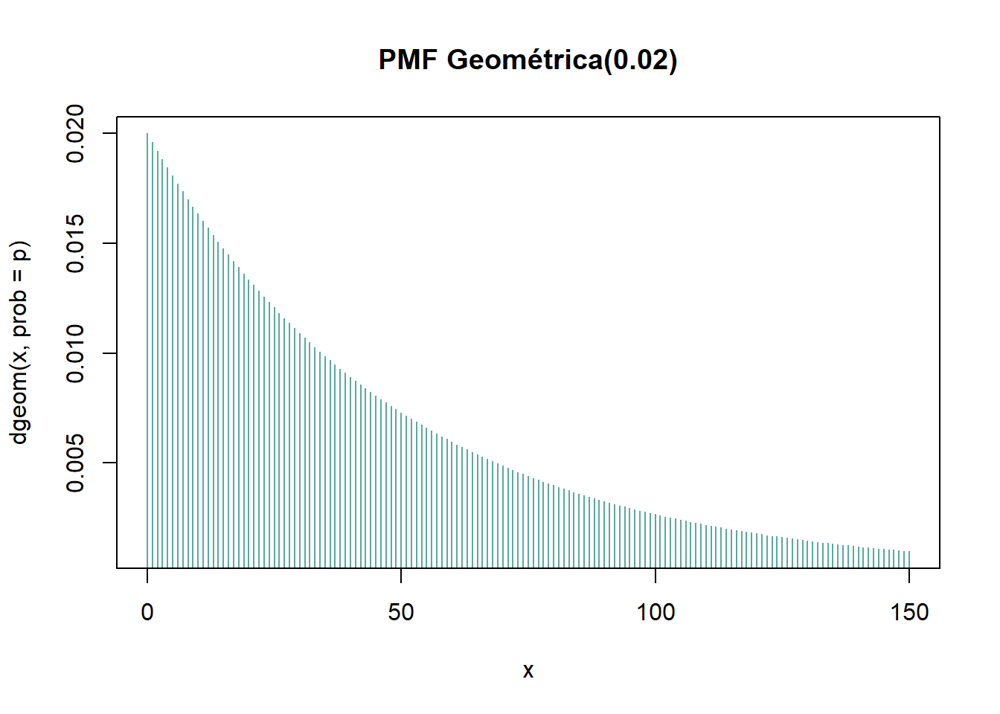
plot(x, pgeom(x, prob = p), type ="s", col ="#0B3C49", main ="CDF Geométrica(0.02)")
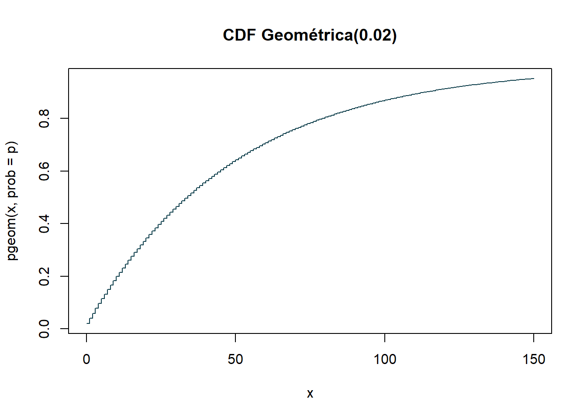
# b. Esperanza, varianza y desviación estándaresp_geom <- (1- p) / pvar_geom <- (1- p) / p^2sd_geom <-sqrt(var_geom)# c. Simulación de 10,000 ensayosset.seed(123)sim_geom <-rgeom(10000, prob = p)cat("Media Teor:", esp_geom, "| Media Sim:", mean(sim_geom), "\n")
Media Teor: 49 | Media Sim: 50.1231
# d. Falta de memoria: P(X >= s + t | X >= s) = P(X >= t)s_previas <-10; t_extra <-5p_condicional <-mean(sim_geom[sim_geom >= s_previas] >= s_previas + t_extra)p_teorica <-mean(sim_geom >= t_extra)cat("P(X >= 15 | X >= 10):", p_condicional, "| P(X >= 5):", p_teorica, "\n")
Si el 2% de las piezas sale defectuoso, en promedio se producen 49 piezas buenas antes de encontrar la primera con falla (la simulación dio 50.12). La desviación estándar es 49.5, casi igual a la media, lo que indica que la primera defectuosa puede aparecer muy pronto o hacerse esperar bastante.
Lo más llamativo es la falta de memoria: la probabilidad de producir 5 piezas buenas más, habiendo ya producido 10 sin fallas (0.9074), es casi idéntica a la de producir 5 desde el inicio (0.9047). Dicho de otra forma, que la máquina lleve un buen rato sin fallar no modifica la probabilidad de que la próxima pieza salga defectuosa.
Ejercicio 3.2
TCL con \(k=1000\) y \(n=50\) para una Geométrica.
set.seed(123)p <-0.1medias_geom <-sapply(1:1000, function(i) mean(rgeom(50, prob = p)))hist(medias_geom, probability =TRUE, col ="#A7D3CC", main ="TCL - Geométrica")curve(dnorm(x, mean = (1- p) / p, sd =sqrt((1- p) / (p^2*50))), add =TRUE, col ="#E4572E", lwd =2)
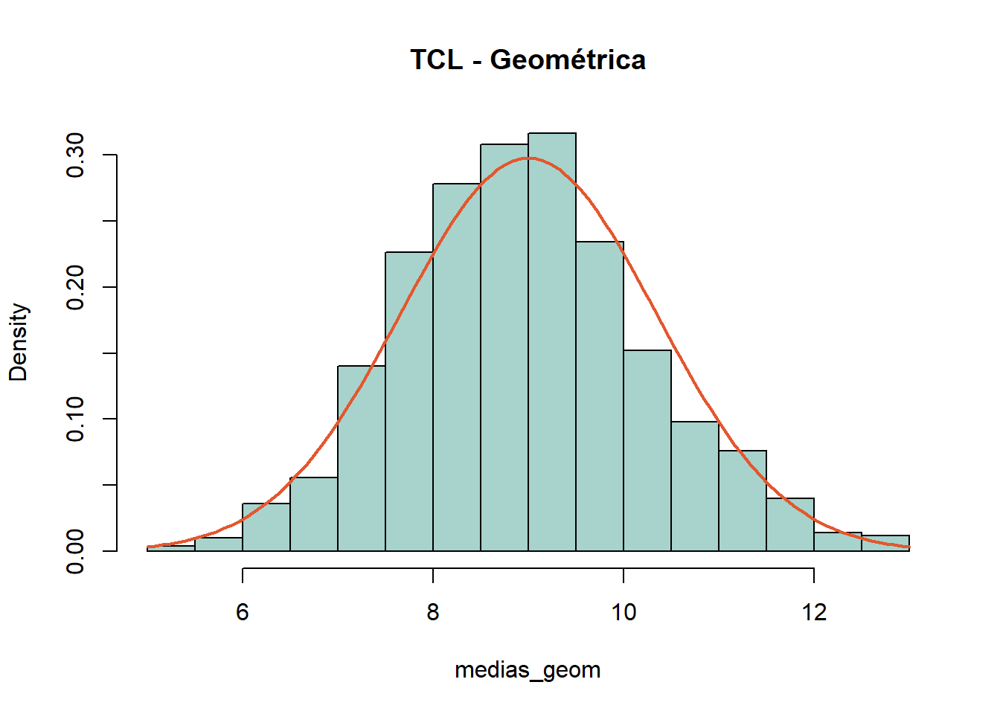
La geométrica es muy asimétrica: casi todos los valores son pequeños y la cola se estira hacia la derecha. Aun así, los promedios de muestras de 50 se acomodan en forma de campana alrededor de 8.96 (la media teórica es 9). Puede quedar un ligero sesgo por lo asimétrica que es la variable original, pero en términos generales el TCL funciona.
Distribución Binomial Negativa
Ejercicio 4.1
Función que contrasta la suma de geométricas con la binomial negativa.
compara_geom_nbinom <-function(r, p, n_sim =10000) {# Suma de r geométricas independientes suma_geom <-rowSums(matrix(rgeom(r * n_sim, prob = p), ncol = r))# Binomial negativa generada directamente directo_nbinom <-rnbinom(n_sim, size = r, prob = p)# Gráfico lado a ladopar(mfrow =c(1, 2))hist(suma_geom, main ="Suma de Geométricas", col ="#5AA9A0", probability =TRUE)hist(directo_nbinom, main ="Binomial Negativa Directa", col ="#F2C14E", probability =TRUE)par(mfrow =c(1, 1))}# Pruebacompara_geom_nbinom(r =5, p =0.3)
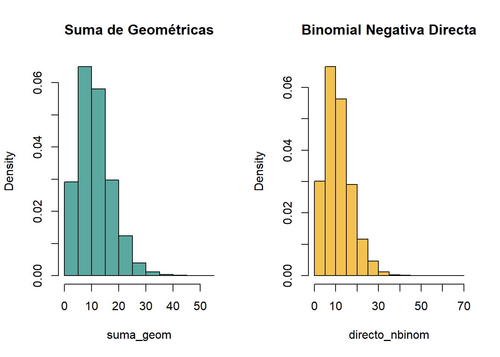
Se programó una función que suma \(r\) geométricas independientes y la contrasta con una binomial negativa simulada de manera directa. Para \(r = 5\) y \(p = 0.3\) ambos histogramas lucen casi iguales. El razonamiento es sencillo: esperar al quinto éxito equivale a esperar el primero, después el segundo, y así sucesivamente, y cada una de esas esperas es una geométrica.
Ejercicio 4.2
TCL para medias muestrales (\(k=1000, n=50, r=4, p=0.4\)).
set.seed(123)r <-4; p <-0.4mu_bn <- r * (1- p) / pvar_bn <- mu_bn / pmedias_bn <-sapply(1:1000, function(i) mean(rnbinom(50, size = r, prob = p)))hist(medias_bn, probability =TRUE, col ="#8FC9BF", main ="TCL - Binomial Negativa")curve(dnorm(x, mean = mu_bn, sd =sqrt(var_bn /50)), add =TRUE, col ="#0B3C49", lwd =2)
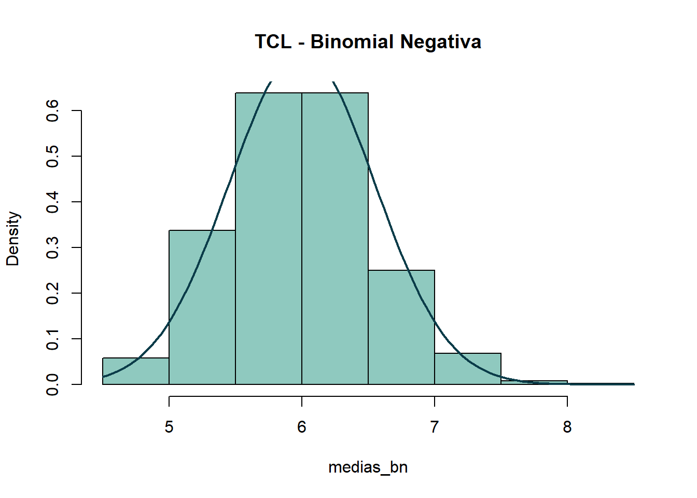
Con la binomial negativa ocurre lo mismo: los promedios de muestras de 50 dibujan una campana centrada en 6, muy próxima a la media teórica de 6, y la curva normal se encima bien sobre el histograma.
Distribución Poisson
Ejercicio 6.1
TCL para una Poisson con \(\lambda = 7\).
set.seed(123)lambda <-7medias_poisson <-sapply(1:1000, function(i) mean(rpois(50, lambda = lambda)))hist(medias_poisson, probability =TRUE, col ="#A7D3CC", main ="TCL - Poisson(7)")curve(dnorm(x, mean = lambda, sd =sqrt(lambda /50)), add =TRUE, col ="#E4572E", lwd =2)
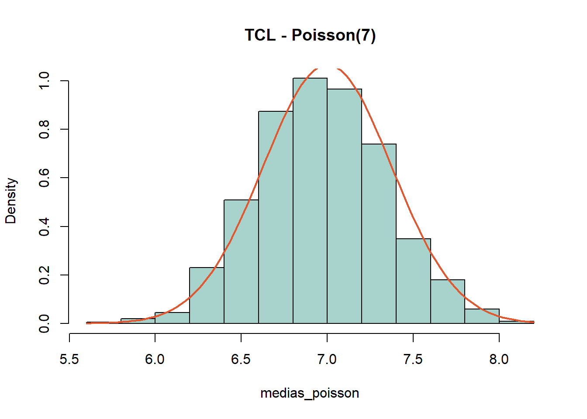
Los promedios de muestras de 50 de una Poisson(7) forman una campana alrededor de 6.98, casi el 7 teórico. También es una campana angosta (desviación estándar teórica de 0.37): con 50 datos, el promedio casi siempre queda cerca del valor verdadero.
La suma de las dos Poisson arroja una media de 6.26 y una varianza de 6.11, casi lo mismo que la Poisson(6.3) directa. Como en una Poisson la media y la varianza son iguales, que ambas ronden 6.3 es una buena señal de que la suma también es Poisson. Con cuatro variables sucede igual: media 9.43 y varianza 9.44, cercanas a 9.5. Un caso práctico: si los clientes llegan a una tienda por dos puertas de forma independiente, el total de llegadas también es Poisson, con \(\lambda\) igual a la suma de ambas tasas.
lambda <-8# a. Inventario de 12 unidades: P(X > 12)p_agotado_12 <-1-ppois(12, lambda = lambda)cat("a. P(Quedarse sin stock con 12 unidades):", round(p_agotado_12, 4), "\n")
a. P(Quedarse sin stock con 12 unidades): 0.0638
# b. Unidades necesarias para P(X > k) < 0.05 <=> P(X <= k) >= 0.95k_opt_5pct <-qpois(0.95, lambda = lambda)cat("b. Unidades necesarias para < 5% prob de agotarse:", k_opt_5pct, "\n")
b. Unidades necesarias para < 5% prob de agotarse: 13
# c. Costo esperado diario para un nivel de inventario Scosto_esperado <-function(S, lambda =8, c_mant =2, c_falt =15, c_adq =10) { demanda <-0:50 probs <-dpois(demanda, lambda = lambda) sobrante <-pmax(0, S - demanda) faltante <-pmax(0, demanda - S) costo <- c_adq * S + c_mant * sobrante + c_falt * faltantesum(costo * probs)}cat("c. Costo esperado con inventario S = 12:", costo_esperado(12), "\n")
c. Costo esperado con inventario S = 12: 130.207
# d. Nivel óptimo de inventarioniveles <-1:25costos <-vapply(niveles, costo_esperado, numeric(1))s_optimo <- niveles[which.min(costos)]cat("d. Nivel óptimo de inventario:", s_optimo, "con un costo esperado de:", min(costos), "\n")
d. Nivel óptimo de inventario: 6 con un costo esperado de: 95.95607
# Gráfica de optimizaciónplot(niveles, costos, type ="b", pch =19, col ="#0B3C49",main ="Optimización de Inventario", xlab ="Nivel de Inventario (S)", ylab ="Costo Esperado ($)")abline(v = s_optimo, col ="#E4572E", lty =2)
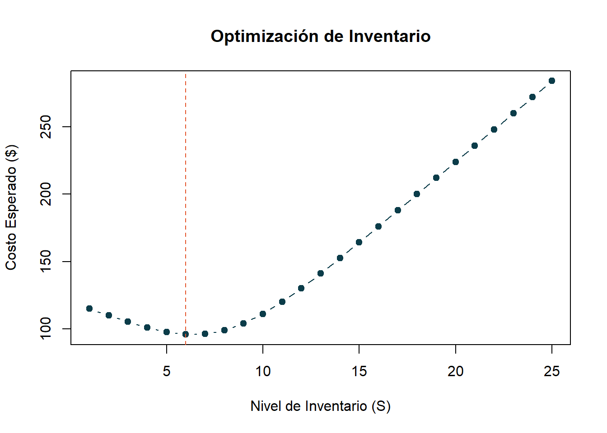
a. Con 12 unidades en almacén, la probabilidad de quedarse sin producto en un día es de 6.38%, aproximadamente 1 día de cada 16.
b. Para que la probabilidad de agotarse sea menor al 5% se necesitan 13 unidades.
c. Con 12 unidades, el costo esperado diario es de 130.21 pesos.
d. El inventario que minimiza el costo es de 6 unidades, con un costo esperado de 95.96 pesos por día.
Lo que más sorprende es que el inventario óptimo (6) queda por debajo de la demanda promedio (8). El motivo es que cada unidad en almacén cuesta $10 de compra más $2 si no se vende, mientras que quedarse sin una cuesta $15, así que no resulta tan rentable acumular de más. Si se buscara un nivel de servicio del 95% (13 unidades), el costo subiría a 141.12 pesos diarios. La enseñanza práctica es que no siempre conviene evitar los faltantes a cualquier precio: todo depende de comparar el costo de mantener inventario con el de perder una venta.
Conclusión
En esta tarea se trabajó con las principales variables aleatorias discretas (uniforme, binomial, geométrica, binomial negativa y Poisson): se simularon en R y se contrastaron los resultados con la teoría. En todos los casos las medias y varianzas simuladas quedaron muy cerca de las fórmulas, lo que da confianza en que los modelos describen bien el fenómeno.
Tres ideas principales:
El TCL aparece una y otra vez. Ya sea que la variable sea plana (uniforme), sesgada (geométrica, binomial negativa) o de conteo (Poisson), el promedio de muestras de 30 o 50 observaciones adopta forma de campana. Esto es lo que más adelante justifica el uso de la normal en inferencia.
Las distribuciones están emparentadas. La suma de binomiales con la misma \(p\) es binomial, la suma de geométricas es binomial negativa y la suma de Poisson es Poisson. Conocer estas relaciones ahorra mucho trabajo.
Los modelos sirven para decidir. El ejercicio de inventario lo muestra: con una Poisson y una función de costos se puede hallar cuánto conviene almacenar, y la respuesta no siempre coincide con la intuición inicial.